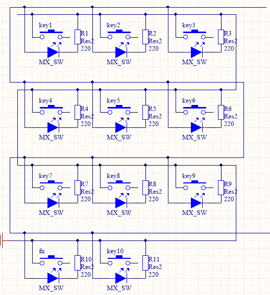
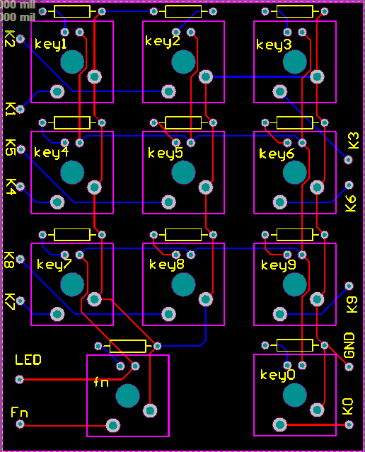

出于对机械键盘的喜爱，以及DIY的热情（想玩机械又穷），又从老师那里了解到Arduino Leonardo可以使用Keyboard.h这个库来模拟键盘输入，因此有了这个项目。我们会把用到的工具和涉及到的参考资料放到下面。
工具以及文件
- PCB设计——Altium Desginer 百度云下载 提取码：4sau
- Cherry轴原件库 百度云下载 提取码：efnp
- Keyboard Layout Editor
- 定位板生成网站
- Fusion 360
- Makerbot Desktop
- Lantern(有些网站需翻墙）下载网站
各部分制作过程
主控程序编写
通过查阅Keyboard.h库的资料，我们编写了一个简单的开关程序，即一个引脚控制一个键代码如下：
如果想制作一个标准87键或者104键的键盘就需要按矩阵键盘来编写程序，提供一个有关矩阵键盘主控设计的帖子 学着写键盘主控
PCB制作
PCB制作参考了用Altium Designer画一张机械键盘PCB这个帖子，需要注意的是，由于我们没有采用矩阵键盘的设计，所以每个LED下面都需要接一个电阻，由于Arduino的数字口的输出电压为5V，因此要达到LED3V的电压要求需要串联一个220欧的电阻。需注意不同颜色的LED灯的额定电压不同，在选配灯珠时需考虑电阻的选择。完成后原理图及PCB如下：
- 
- 
外壳制作
根据PCB制作那个帖子，在定位板生成网站得到dxf文件之后导入Fusion360拉出外壳，要注意符合PCB板的尺寸，然后导入makerbot切片打印
成品展示
You can @mention a GitHub username to generate a link to their profile. The resulting <a> element will link to the contributor’s GitHub Profile. For example: In 2007, Chris Wanstrath (@defunkt), PJ Hyett (@pjhyett), and Tom Preston-Werner (@mojombo) founded GitHub.
Support or Contact
Having trouble with Pages? Check out our documentation or contact support and we’ll help you sort it out.